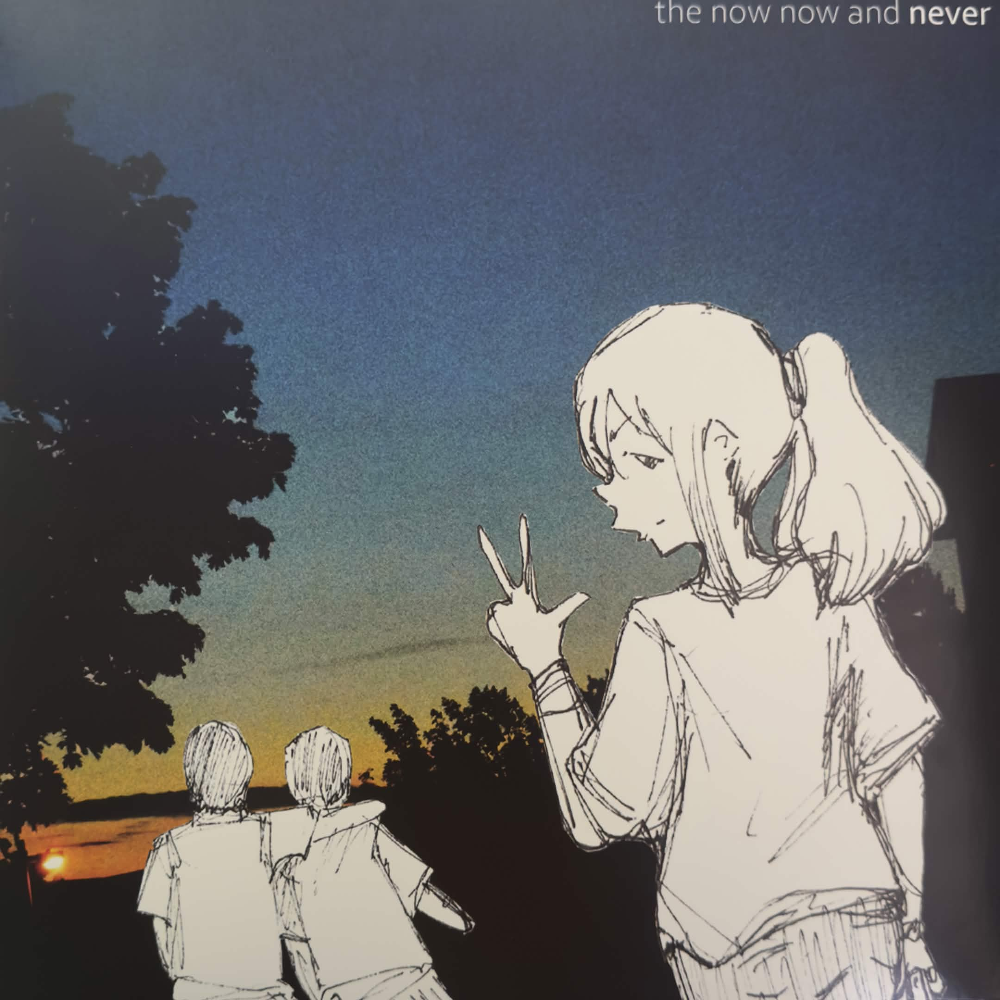
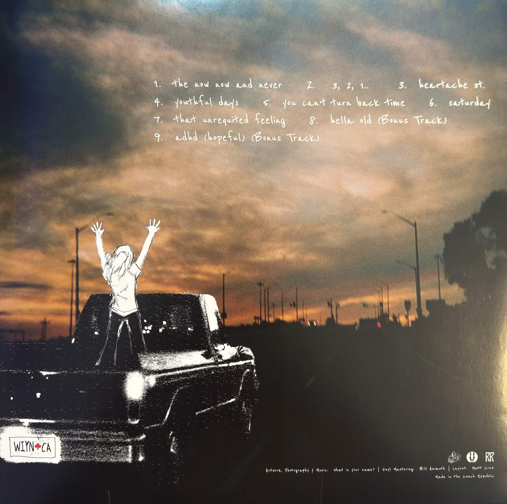

Listen to a song from this album!
What better place to start than the album that first made me truly fall in love with music. what is your name? is the alias of an artist who also goes by 2 0 2 1, he primarily made drum and bass stuff but wanted to shift away from that sound. After releasing his project “reverie,” he recorded and released TNNAN in under a month on June 15, 2022, under the new name. This album incorporates a lot of the sampling techniques he picked up while making music as 2 0 2 1 and combined it with live instrumentals (all done by himself.) This album was first shown to me by a friend named Julian around the time that the album first released in 2022.
To this day Julian’s still one of the realest and most down to earth and caring people I’ve ever met, I mean he put up with freshman year William which already says a lot about him, and I heavily credit him for me still being here today. There was a whole bunch of stuff wrong in freshman year that I don’t really want to publicize on the internet, but I was a miserable and depressed little asshole but that guy helped keep me grounded and feel as if I belonged for that entire year. That 6th period video production class with Mr. Perez, Julian, and Andrew was really the only safe space I had at school for that entire year. At some point he introduced me to this album and it really just changed everything for me, it made me realize just how beautiful this medium can be.
But despite how eye opening this album was for me, it kind of came and went. I was so eager to explore more music after hearing it that after a month I kinda moved past it as soon as I picked it up because I was so busy listening to new shit. But for that month I was playing it constantly, I underwent so much sadness while listening to it and had so many emotions closely tied to different songs. Years passed and sometime in I wanna say February of 2025 I remembered this album and decided to listen to it again, albeit a bit paranoid that all the fond memories I had of this album were more from nostalgia rather than the album itself actually being that good. Thank fucking God I was wrong.
This is an album that I have experienced alongside the entire human emotional spectrum, I’ve listened to this album as I’ve cried, as I’ve smiled, I’ve lost people and turned to this album, I’ve made some of my favorite memories while having this album playing in my earphones, it’s intertwined itself with my fucking soul at this point. But more than anything this album embodies the emotions of nostalgia and yearning, every song is as divine and optimistic as it is gut wrenching, just like how said emotions can be so beautiful yet so disheartening at the same time.
As for the album’s sound itself, I don’t even know how to talk about it because I truly believe everything about this album is perfect. Every use of sampled vocals, every guitar, every synth, every bassline, every crash on the drums, it all belongs and everything appears at the perfect time, making for one of the most cohesive listening experiences ever. I feel like a lot of what I have to say is kind of repetitive simply because it’s so hard to express what specific parts I love about this album when the whole thing is incredible and it all sounds so out of this world I don’t even think I could formulate enough words to describe them.
The album starts with the title track, “the now now and never” and what a start it is man, launching you into one of the most beautiful arrangements of drums, guitars, and synths I’ve ever had the privilege of hearing. It’s as if the music and the instruments themselves are fighting to stay alive, which really works hand in hand with this album’s nostalgic and yearnful sound. The way the instruments all interact with each other is incredible. I love how on the later half the song get consumed by these shrieking synths, before eventually everything begins to blur together and fade into nothingness. After the title track comes a transitional track “3, 2, 1..” which I view as being here to show off how the album also incorporates its samples. This goes into heartache st. which sounds like just that, heartache. It’s a catastrophic and disheartening song with a shaky, haunting vibe the whole way through. Even the moments where the song takes a step back have this reminiscent feeling to them as if reflecting on past regrets.
youthful days is the fourth song on this album and is probably the most “2 0 2 1” sounding song on here (and is also the one you're listening to right now, assuming you clicked the play button), having a girl’s voice looped as the main groundwork for the song, giving the track this feel as if you’re watching an old childhood video, before sending you back into heavenly shoegaze bliss as is typical for this album. One of the best songs on this whole record, I love the build up throughout the whole thing and that ending with the chorus chanting along with the music, such a fucking good song man. you can’t turn back time is the climax of this album, a complete and utter emotional collapse that almost feels apocalyptic—then all of a sudden it cuts out and switches to this drum and bass focused cut of music, like you’ve gained this burst of energy and are making a lunge towards your goals. Slowly the sound and feel of original track starts to fade back in before it snaps back into this beautiful, noisy collage of everything that makes this album so great. I don’t even know how to describe it other than just magic.
The second to last track is “saturday,” a much needed chill step back from the absolute behemoth which was you can’t turn back time, it’s a much shorter and low tempo feel good song that—you guessed it—feels like a saturday. All your stress can just be let go for a moment. After such an emotional album, we end off with “that unrequited feeling,” a song that leaves you feeling like everything will be alright despite all the struggle you may endure. It’s super poppy and upbeat and easily the happiest sounding song on here, with a ridiculous good bassline all throughout. It’s a fantastic end to such a bombastic album that leaves you hopeful for a better tomorrow. The album features two bonus tracks, one on streaming and one on the physical release, but I won’t be talking about those for this review.
the now now and never is one of the most incredible albums ever made and I’m baffled that it was made by one dude in under a month. I eagerly wait to see what music he puts out next and strongly recommend anyone who’s ever had heavy sadness or a broken heart listens to this album.